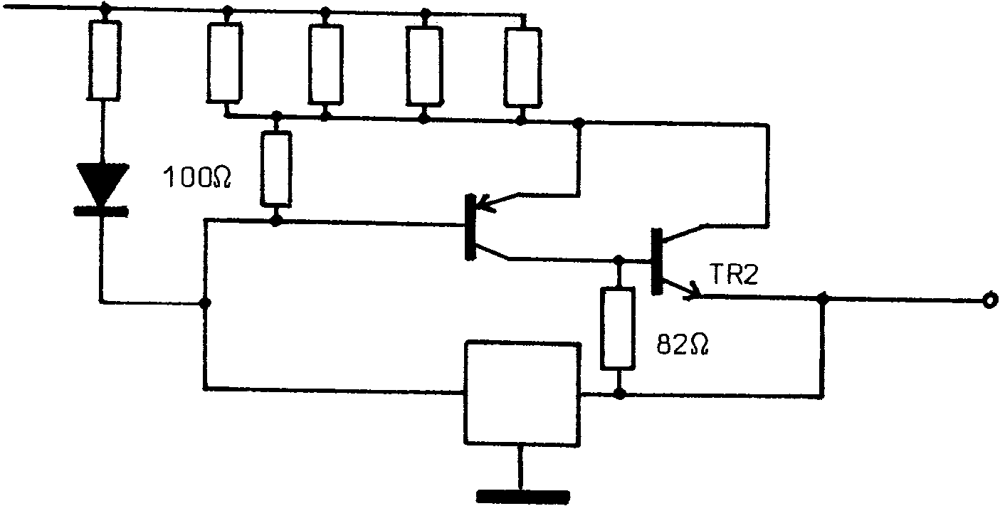
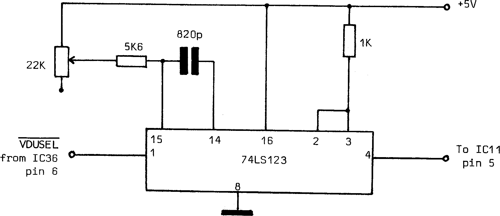

INMC News |
Winter 1978 · Issue 1 |
| Page 2 of 9 |
|---|
The circuit diagram in some construction notes is also incorrect – C5, C6 and C7 are drawn reversed. The PCB is however correct and the markings on the board should be followed.
The stability and regulation of the power supplies can be improved by the addition of a 2.2UF Tantalum capacitor and a 0.1UF disc ceramic capacitor in parallel between −5V, −12V, +12V and ground, together with the addition of a 100R and 82R resistor as show in the diagram below:
Contrary to some rumours we have heard, the small psu will drive a Nascom 1, a buffer board, and a memory board with up to 32K memory.
The Nascom 1 on board UHF modulator is capable of producing a good picture on a domestic T.V., although results in the field vary. If you have a poor picture and need a stronger signal, try reducing the value of R8. The winding of the coil can also be critical and seems to account for much of the variation between systems. Rather than spend too much time on this, we would recommend that you obtain a separate add-on, screened modulator from your local distributor. The cost is only £2.50 + VAT and well worth while. Fitting details are included.
During multiple video RAM accessing, some noise may appear on the screen. The circuit below has been published in ETI as a suggestion to overcome this.
| Page 2 of 9 |
|---|